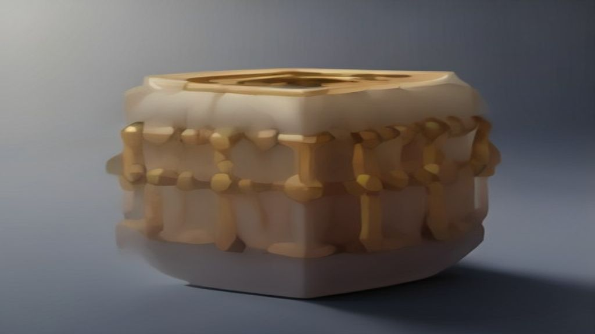
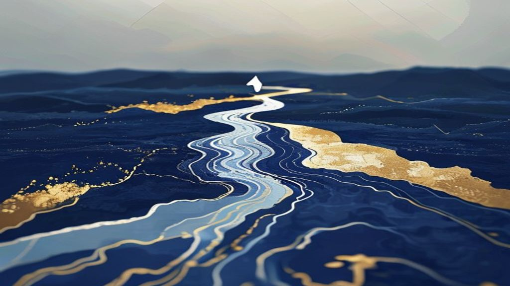
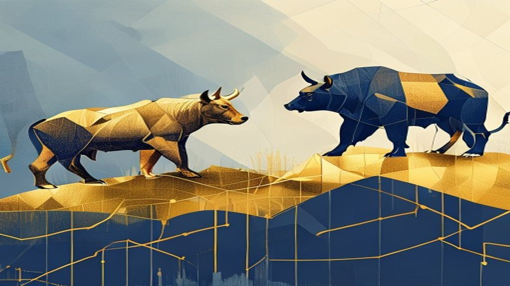
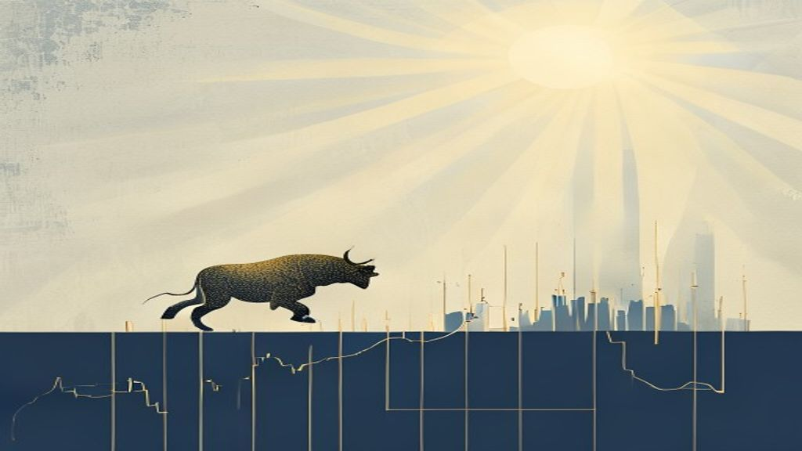
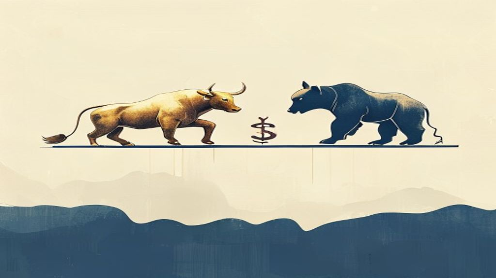
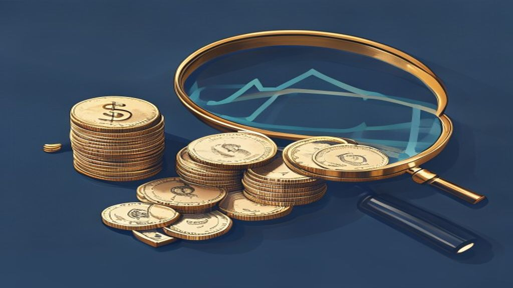
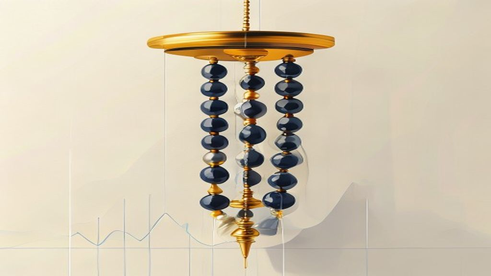

Market Wrap
How the session played out, in two minutes.
Market Wrap — 13 August 2026
Indian benchmark indices, Nifty 50 and Bank Nifty, closed in negative territory today, while the broader market indices, Midcap 100 and Smallcap 100, managed .
Market Wrap — 12 August 2026
Indian benchmark indices witnessed a mixed closing, with Nifty 50 declining marginally while Bank Nifty posted solid gains. Weakness in the IT and FMCG sector.
Market Wrap — 11 August 2026
Indian benchmark indices, Nifty 50 and Bank Nifty, closed in the red today, extending losses into the afternoon session. Global geopolitical tensions, particu.
Market Wrap — 10 August 2026
Indian benchmark indices, Nifty 50 and Sensex, ended largely flat today amidst mixed global cues and elevated oil prices. The broader market, however, saw Nif.
Market Wrap — 07 August 2026
Indian benchmark indices, Nifty 50 and Bank Nifty, ended the day in negative territory. Midcap 100 showed resilience, closing with modest gains, while Smallca.
Market Wrap — 06 August 2026
Indian benchmark indices witnessed a mixed closing, with Nifty 50 barely holding onto gains. Strong buying by Domestic Institutional Investors (DIIs) largely .
Market Wrap — 05 August 2026
Indian benchmark indices ended a volatile session with marginal gains for Nifty 50 and Mid/Smallcaps, while Bank Nifty closed lower. The Reserve Bank of India.

Market Wrap — 04 August 2026
Indian benchmark indices snapped a four-day winning streak, closing lower today. Caution ahead of the Reserve Bank of India's policy announcement and profit-b.
Market Wrap — 03 August 2026
Indian benchmark indices surged today, with Nifty 50 gaining 1.60% and Bank Nifty advancing 1.72%, both closing at their day's highs. The primary catalyst for.
Market Wrap — 31 July 2026
Indian equity benchmarks extended their gains for a third consecutive session, with both Nifty 50 and Bank Nifty closing in positive territory. Positive globa.
Market Wrap — 30 July 2026
Nifty 50 closed marginally higher, extending its gains above 24,300. Broader markets, including Midcap and Smallcap indices, ended in the red, indicating a mi.
Market Wrap — 29 July 2026
Indian benchmark indices rallied today, with Nifty 50 closing over 1% higher and Bank Nifty also posting solid gains. The market was buoyed by strong domestic.
Market Wrap — 28 July 2026
Indian benchmark indices, Nifty 50 and Bank Nifty, ended marginally lower today after a day of range-bound trading. Weakness in FMCG, Energy, and PSU Bank sec.
Market Wrap — 27 July 2026
Indian equities staged a strong rebound, ending a five-session losing streak. Easing geopolitical tensions between the US and Iran, leading to a sharp fall in.

Market Wrap — 24 July 2026
Indian equities saw a mixed closing today, with the Nifty 50 declining while Bank Nifty posted gains. Global cues, particularly concerns over rising oil price.
Market Wrap — 23 July 2026
Indian benchmark indices extended their losing streak for a fourth consecutive session, with Nifty 50 and Bank Nifty closing significantly lower. Rising globa.
Market Wrap — 22 July 2026
Indian benchmark indices, Nifty 50 and Bank Nifty, closed lower for the day. Rising crude oil prices globally and concerns over Middle Eastern supply disrupti.
Market Wrap — 21 July 2026
Indian benchmark indices, Nifty 50 and Bank Nifty, closed in the red, extending losses for the day. Heavyweight stocks like HDFC Bank, Reliance Industries, an.
Market Wrap — 20 July 2026
Indian benchmark indices, Nifty 50 and Bank Nifty, closed lower today. Broader markets, Nifty Midcap 100 and Smallcap 100, showed resilience with gains.
Market Wrap — 17 July 2026
Indian benchmark indices, Nifty 50 and Bank Nifty, closed significantly higher today. The market rally was primarily driven by strong Q1 earnings reports and .
Market Wrap — 16 July 2026
Indian benchmark indices, Nifty 50 and Bank Nifty, closed largely flat to marginally negative today. Geopolitical concerns, specifically the Iran-US conflict,.
Market Wrap — 15 July 2026
Indian equities concluded the day marginally higher, giving up most of their intraday gains amidst volatile trading. Geopolitical tensions, elevated crude oil.
Market Wrap — 14 July 2026
Indian benchmark indices, Nifty 50 and Bank Nifty, closed lower today, shedding over half a percent each. The market decline was primarily driven by surging c.
Market Wrap — 13 July 2026
Indian benchmark indices, Nifty 50 and Bank Nifty, staged a remarkable recovery from early losses to close marginally higher. Strong inflows from Foreign Inst.
Market Wrap — 10 July 2026
Indian equities witnessed a strong rally today, with all major indices closing significantly higher. Broad-based buying, particularly in Realty, PSU Bank, and.
Market Wrap — 09 July 2026
The Nifty 50 closed at 23,962.80, up 0.34%, while the Bank Nifty gained 0.90% to 57,252.45. The market saw a gap open and a range-bound trend, with volatility.
Market Wrap — 08 July 2026
The Nifty 50 closed at 23,882.05, down 2.12%. The Bank Nifty closed at 56,742.60, down 2.51%.
Market Wrap — 03 July 2026
Nifty 50 ended the day with modest gains, while Bank Nifty saw a slight dip. Midcap and Smallcap indices presented a mixed picture, with Midcap 100 closing lo.

Market Wrap — 02 July 2026
Nifty 50 closed higher, gaining over 0.7%, while Bank Nifty remained flat. IT and Auto sectors were the top performers, driving the market's upward momentum.

Market Wrap — 01 July 2026
Indian markets started July on a positive note, with Nifty 50 closing above 24,000 and Bank Nifty gaining over 0.8%. Realty, FMCG, and Media sectors led the c.

Market Wrap — 30 June 2026
Indian benchmark indices, Nifty 50 and Bank Nifty, closed in the red for the second consecutive session. Broader markets, represented by Nifty Midcap 100 and .
Market Wrap — 29 June 2026
Indian benchmark indices, Nifty 50 and Bank Nifty, closed in the red today. Broader markets, Nifty Midcap 100 and Smallcap 100, also saw declines.
Market Wrap — 26 June 2026
Indian benchmark indices, Nifty 50 and Bank Nifty, closed marginally in the green, showing resilience. Broader markets, represented by Nifty Midcap 100 and Sm.
Market Wrap — 25 June 2026
Indian benchmark indices, Nifty 50 and Bank Nifty, closed marginally higher, extending their winning streak. Broader markets, represented by Nifty Midcap 100 .
Market Wrap — 24 June 2026
Indian benchmark indices, Nifty 50 and Bank Nifty, closed significantly higher, with Nifty reclaiming the 24,000 mark. Realty, IT, and Banking sectors led the.

Market Wrap — 23 June 2026
Indian benchmark indices, Nifty 50 and Bank Nifty, closed significantly lower, shedding over 1% each. Broader markets also saw declines, with Midcap 100 down .
Market Wrap — 22 June 2026
Indian benchmark indices, Nifty 50 and Bank Nifty, closed higher for the day, extending their positive run. Broader markets, including Midcap 100 and Smallcap.
Market Wrap — 19 June 2026
Indian benchmark indices, Nifty 50 and Bank Nifty, closed in negative territory. Midcap and Smallcap indices showed resilience, ending the day with gains.

Market Wrap — 18 June 2026
Indian benchmark indices, Nifty 50 and Bank Nifty, closed higher today, extending their positive run. Broader markets also saw gains, with both Nifty Midcap 1.
Market Wrap — 17 June 2026
Indian benchmark indices, Nifty 50 and Bank Nifty, closed higher, extending gains for the day. Broader markets, represented by Nifty Midcap 100 and Smallcap 1.
Market Wrap — 16 June 2026
Indian equities extended their recovery today, with Nifty 50 closing above 23,989. Broader markets, including Midcap and Smallcap indices, also posted positiv.
Market Wrap — 15 June 2026
Indian equities witnessed a strong rally today, with both Nifty 50 and Bank Nifty closing significantly higher. A preliminary US-Iran peace framework eased ge.
Market Wrap — 12 June 2026
Indian benchmark indices witnessed a strong rally today, with Nifty 50 gaining nearly 2% and Bank Nifty surging almost 3%. Broader markets, including Midcap a.
Market Wrap — 08 June 2026
Indian benchmark indices, Nifty 50 and Bank Nifty, closed lower today. Broader markets, Nifty Midcap 100 and Smallcap 100, saw even sharper declines.
Market Wrap — 05 June 2026
Indian benchmark indices saw a mixed close today, with Nifty 50 and Midcap 100 ending in the red, while Bank Nifty posted gains. Media, Realty, and PSU Bank s.
Market Wrap — 04 June 2026
Indian benchmark indices, Nifty 50 and Bank Nifty, closed marginally higher after a volatile session. Broader markets, represented by Nifty Midcap 100 and Sma.
Market Wrap — 03 June 2026
The Nifty 50 closed marginally lower, while the Bank Nifty showed resilience with gains. The IT sector witnessed a significant sell-off, emerging as the top l.
Market Wrap — 02 June 2026
Indian markets ended the day in positive territory, with Nifty 50 closing near 23,500. IT stocks were the star performers, leading the sectoral gains.
Market Wrap — 01 June 2026
Indian benchmark indices, Nifty 50 and Bank Nifty, closed lower for the day. Midcap and Smallcap segments also witnessed declines, indicating broad-based sell.
Market Wrap — 29 May 2026
Indian benchmark indices, Nifty 50 and Bank Nifty, witnessed a significant sell-off today, closing down over 1%. Broader markets, including Midcap and Smallca.
Market Wrap — 28 May 2026
Indian benchmark indices, Nifty 50 and Bank Nifty, closed marginally in the red. Broader markets, represented by Nifty Midcap 100 and Smallcap 100, showed res.
Market Wrap — 27 May 2026
Indian benchmark indices, Nifty 50 and Bank Nifty, closed largely flat to negative, snapping a recent upward trend. Broader markets, represented by the Nifty .

Market Wrap — 26 May 2026
Indian benchmark indices Nifty 50 and Bank Nifty closed in the red, impacted by selling pressure in banking stocks. Midcap and Smallcap indices, however, show.
Market Wrap — 25 May 2026
Indian equities extended their winning streak, with benchmark indices Nifty 50 and Bank Nifty closing significantly higher. Banking and PSU Bank sectors led t.
Market Wrap — 21 May 2026
Indian benchmark indices Nifty 50 and Bank Nifty ended the session marginally lower, reflecting a cautious mood. Smallcap stocks showed resilience, closing wi.